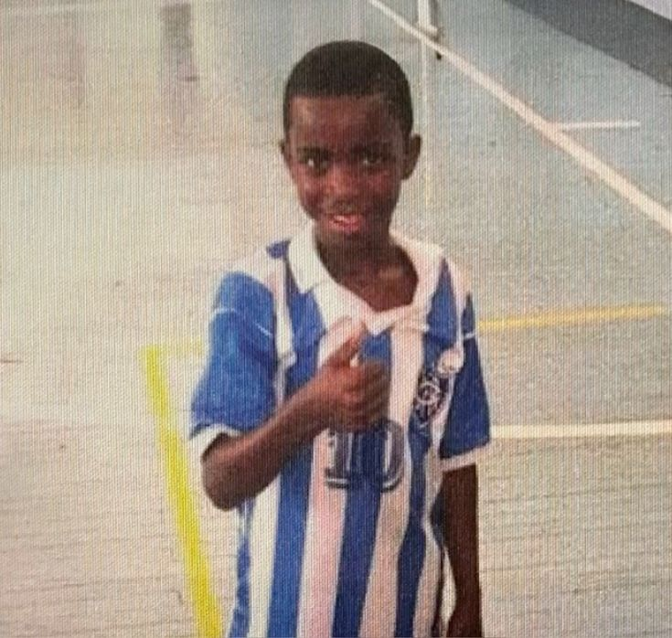

The Story

Early days: Vinícius José Paixão de Oliveira Júnior was born in 2000 in São Gonçalo, a rough suburb near Rio de Janeiro. He grew up idolizing Flamengo, joined their youth academy, and by 16 was already catching the eye of European scouts with his pace, vision and fearless dribbling, on the verge of a big-money move to Real Madrid — despite not having played a single first-team match yet for Flamengo. Real Madrid arrival: He signed with Madrid as a teenager and eventually became a regular, developing into one of the most electric wingers in the world — known for blistering pace, close control, and a knack for turning big games. Along the way he won multiple Champions League titles with the club. The racism ordeal: His rise wasn't without pain. Vinícius became one of the most high-profile victims of racist abuse in Spanish football, with incidents at multiple stadiums making global headlines. He's spoken emotionally about it, at one point breaking down in a press conference over how the abuse affected his love for the game, and he's continued to use his platform to campaign against racism in football. 2026 World Cup: This has been a big chapter for him personally — after being questioned in the past for underperforming with Brazil compared to his Madrid form, Vini finally delivered on the international stage. He scored a brace against Scotland and was a driving force helping Brazil top their group, before the team was eliminated in the quarterfinals. Recent headlines: After Brazil's World Cup exit, he made news again — this time for a cosmetic procedure (a "chin harmonisation") done during the off-season, which went viral after photos and video surfaced online. He's set to link up with new Madrid manager José Mourinho for pre-season.